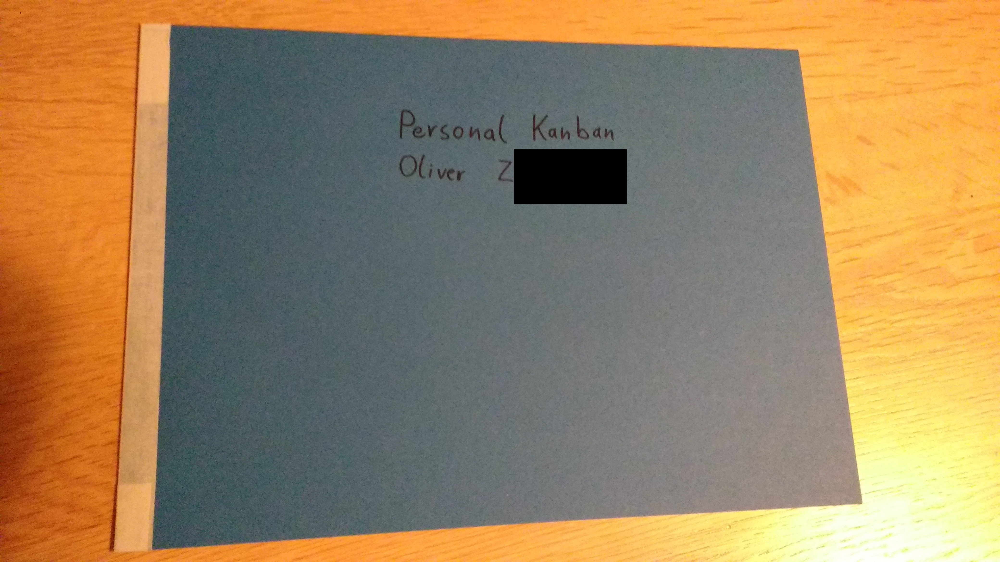

One of my highlights at this year's SoCraTes in Soltau was a session about Personal Kanban hosted by Raimo and Jan. They shared their experiences, practises and highlighted the advantages of a physical board. We even got provided material to build our own Personal Kanban boards. Mine looked like this:

While it was really neat that you could start using it right away, I felt the need to have a more durable board to really start utilizing it. The solution was simple:
During the session I already had the idea, that my old plastic clipboard would be the perfect board material. The plastic is really smooth and sticky notes just, well, stick.
This week I made it to a stationery shop in Hamburg and bought some more transparent and black clipboards:

With some skill, tools and the right amount of force you can remove the clipboard part:

It goes faster after the second bolt, since you know how much force you can apply without damaging the plastic board. Still I cracked one of the transparent boards slightly. Be careful!

The hard part is over, the rest is just joining and labeling the board.
If you put two of those boards back to back, you get a laptop-ish clamshell design. You need to keep a gap when joining the two boards, so they stay foldable:

After drawing the sections and labels:

My girlfriend liked the board so much, I needed to craft an additional one:
Applying some stickers lying around (I do not like putting them on my laptop):

Costs:
Of course, the best result is that I actually apply Personal Kanban now! :)